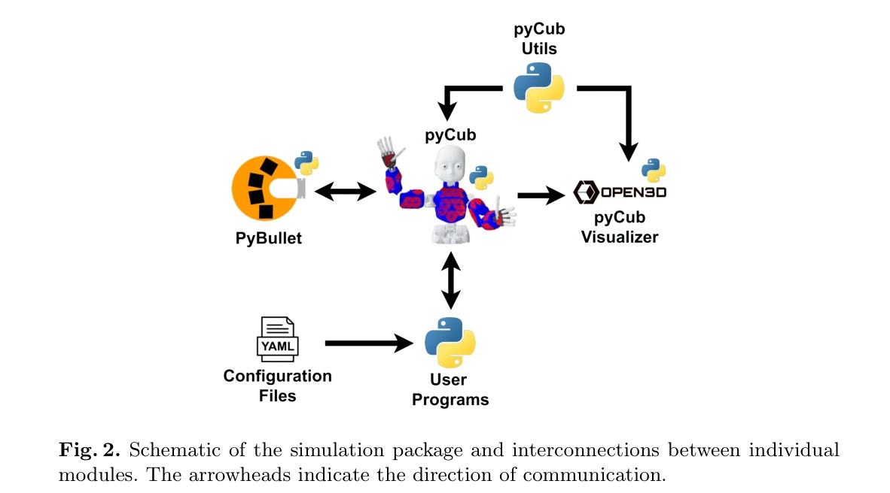

Essence

Fig. 1. An example of the simulation environment showing the iCub humanoid robot,
pyCub는 humanoid robot iCub의 Python 기반 physics 시뮬레이션 프레임워크로, YARP 미들웨어 없이 학생들이 humanoid robotics의 기초를 배울 수 있는 교육용 연습 문제들을 제공한다.
저자: Lukas Rustler, Matej Hoffmann | 날짜: 2025-06-02 | URL: https://arxiv.org/abs/2506.01756
Fig. 1. An example of the simulation environment showing the iCub humanoid robot,
pyCub는 humanoid robot iCub의 Python 기반 physics 시뮬레이션 프레임워크로, YARP 미들웨어 없이 학생들이 humanoid robotics의 기초를 배울 수 있는 교육용 연습 문제들을 제공한다.
Fig. 1. An example of the simulation environment showing the iCub humanoid robot,

Fig. 2. Schematic of the simulation package and interconnections between individual
총평: pyCub는 humanoid robotics 교육 접근성의 실질적 장벽을 Python과 단순화된 아키텍처로 제거한 가치 있는 오픈소스 프레임워크이며, 실제 교육 과정 검증과 완전한 공개를 통해 학술 커뮤니티에 즉시 활용 가능한 자원을 제공한다.